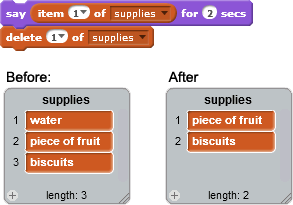

Exclui um ou todos os itens de uma lista
Você pode especificar qual item excluir, escolhendo no menu suspenso ou digitando um número. Ao escolher "último", o último item da lista é excluído. Ao escolher "todos", tudo é excluído da lista. As exclusões diminuem o comprimento da lista.

Você pode especificar o número do item que deseja excluir. Por exemplo:
Para excluir o último item da lista, escolha "último" no menu suspenso: 
Você também pode optar por excluir tudo da lista: